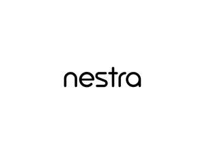

Trade Mark Journal No.2025/033 15 August 2025
UK00004231314 9 July 2025 (7,8,9,10,11,21,35)
Mark 1
NESTRA
Mark 2

- Class 7
- Washing machines incorporating tumble driers; combined washing machines and tumble driers; washing apparatus; colour-washing machines; washing machines; pressure washing machines; clothes washing machines; washing machines for household purposes; dish washing machines for household purposes; washing machines for pans; washing machines for crockery; electric machines for washing; washing machines for laundry; washing machines incorporating drying facilities; combination washing and drying machines; combined washing and drying machines; electric machines for washing laundry; washing machines for clothes; electric machines for washing clothing; washer-dryers; dishwashers; spin driers (not heated); spin dryers; spin dryers (machines); electric food processors; food processors; electrical food processors; electric food processors; electric food processors for domestic use; electric kitchen appliances for chopping, mixing, pressing; electrical coffee grinders; electric coffee grinders; vacuum cleaners; domestic vacuum cleaners; household vacuum cleaners; electric carpet vacuum cleaners; carpet cleaning machines; electric domestic vacuum cleaners; electric hand held vacuum cleaners; electric vacuum cleaners for domestic use; electrical domestic machines for vacuuming; robotic vacuum cleaners; vacuum sealing apparatus; steam cleaning machines; steam cleaners; bread slicers (machines); cheese slicers (machines); electric slicers (machines); electric meat slicers for kitchen use; vegetable slicers (machines); vegetable spiralizers, electric; vegetable peelers, electric; electric mixers for household purposes; electric domestic food mixers; electric mixers for mixing food; electric food mixers; electric juicers; electric juice extractors; ironing machines; ironing machines for clothing; power tools; pressure washers; parts and fittings for all of the aforesaid goods.
- Class 8
- Hand tools and implements, hand-operated; cutlery; razors; hair styling appliances; electric hair straighteners; hair straightening irons; flat irons; curling irons; hair clippers; hair trimmers; electric shavers; electric razors; beard trimmers; nasal hair trimmers; electric ear hair trimmers; hair cutting and removal implements; electric irons; steam irons; cutting tools; knives; scissors; peelers; kitchen mandolines; parts and fittings for all of the aforesaid goods.
- Class 9
- Scientific, research, navigation, surveying, photographic, cinematographic, audiovisual, optical, weighing, measuring, signalling, detecting, testing, inspecting, life-saving and teaching apparatus and instruments; apparatus and instruments for conducting, switching, transforming, accumulating, regulating or controlling the distribution or use of electricity; apparatus and instruments for recording, transmitting, reproducing or processing sound, images or data; recorded and downloadable media, computer software, blank digital or analogue recording and storage media; mechanisms for coin-operated apparatus; cash registers, calculating devices; computers and computer peripheral devices; fire-extinguishing apparatus; recording discs; compact discs, DVDs and other digital recording media; information technology and audiovisual equipment; audio amplifiers; audio- and video-receivers; audio apparatus; audio cables; audio devices and radio receivers; audio digitisers; audio electronic apparatus; audio mixing apparatus; audio mixing consoles; audio mixing desks; audio players; audio processing apparatus; audio recording apparatus; audio speakers; audio speakers for automobiles; audio speakers for home; audio/visual and photographic devices; audio-video receivers; audiovisual apparatus; audiovisual receivers; cable television converters; cable television transmitters; car radios; CD players; computer cables; computer docking stations; computer hardware; computer keyboards; computer modems; computer monitors; computer peripheral apparatus; computer peripheral equipment; computer printers; computer screens; computer systems; decoders for television sets; digital amplifiers; cameras; digital cameras; digital sound processors; digital tablets; digital televisions; digital video disc drives; digital video disc recorders; digital video recorders; disc players; display devices, television receivers and film and video devices; DVD drives; DVD players; DVD recorders; handheld computers; handheld personal computers; computer hardware; headphone consoles; headphones; earphones; headsets; high fidelity audio apparatus; interactive computer systems; interactive television terminal sets; laptop computers; laser disc players; mobile computers; mobile phones; music players; notebook computers; personal computers; personal home computers; personal stereos; portable computers; portable media players; portable radios; radio alarm clocks; radio receivers; radio tuners; radios; radios for vehicles; receivers (audio and video); record players; satellite apparatus; satellite navigational apparatus; satellite receivers; satellite receiving apparatus; satellite television receiving apparatus; satellite transceivers; set-top boxes; speakers; speakers (audio equipment); speakers for computers; speakers for record players; smart speakers; stands for televisions; stereo amplifiers; stereo headphones; stereo tuners; stereos; tablet computers; telecommunications cables; television apparatus; television decoders; television display apparatus; television monitors; television receivers; television receivers; TV sets; television receiving dishes; television recorders; television screens; television sets; television transmitters; televisions; vehicle radios; video apparatus; video devices; video disc players; video players; video receivers; video reproducing apparatus; videodisc players; videodisc recorders; video recorders; videotape recorders; wall mountings adapted for television monitors; thermostats; smart thermostats; security apparatus; doorbells; smart doorbells and cameras; electrical locks; smart locks; smoke detectors; carbon monoxide detectors; smart home hubs; smart plugs and outlets; measuring cups; measuring spoons; thermometers; scales; smart weighing scales; wearable activity trackers; parts and fittings for all of the aforesaid goods.
- Class 10
- Apparatus for treatment of the skin for cosmetic and medical use; light therapy masks for cosmetic and medical use; skin enhancement apparatus; laser apparatus for treatment of skin; massage apparatus and instruments; apparatus and instruments for cosmetic therapy, apparatus for the treatment of the skin; apparatus and instruments for stimulating hair growth; sexual stimulation devices; electro-therapy apparatus and instruments; electrical apparatus for stimulating muscle movement; electrical apparatus used to aid weight loss; laser apparatus for cosmetic and medical use; microdermabrasion apparatus; dermaplaning and exfoliating apparatus; oral irrigators; massagers; massage appliances; body massagers; foot massagers; scalp massagers; massage chairs with built-in massage apparatus; heat treatment apparatus; heat pads for therapeutic treatment; heat wrap massage apparatus; blood pressure testing apparatus; blood pressure monitors; pulse oximeters; parts and fittings for all of the aforesaid goods.
- Class 11
- Apparatus for lighting, heating, cooling, steam generating, cooking, refrigerating, drying, ventilating, water supply and sanitary purposes; tumblers (heat driers) for laundry use; tumble driers (heat driers); tumblers (heat dryers) for laundry use; tumble dryers (heat dryers); tumble dryers; fridge-freezers; refrigeration units; refrigerators; electric refrigerators (for household purposes); combinations of refrigerators and freezers; domestic refrigerators; electric refrigerators; smart refrigerators; freezers; deep freezers; ice cream freezers; electric wine coolers; ice cream makers; cookers; microwave cookers; rice cookers; crepe cookers; electric pressure cookers (autoclaves); egg cookers; steam cookers; electric cookers; gas cookers; domestic gas cookers; electric rice cookers; cookers incorporating grills; electric slow cookers; hoods for cookers; electric pressure cookers; electric bread cookers; electric egg cookers; electric domestic pressure cookers; extraction hoods for cookers; vapour extractor hoods for cookers; air extractor hoods for use with cookers; cookers having vitreous enamelled surfaces; range hoods; gas burner ranges; gas and electric ranges; kitchen ranges; electric ranges; gas ranges; cooking ranges; hoods for ranges; microwave ovens (cooking apparatus); hot air ovens; kitchen ranges (ovens); microwave ovens; oven ventilator hoods; domestic ovens; table top ovens; ovens; gas ovens; microwave ovens for domestic use; electric ovens; electric cooking ovens; domestic cooking ovens; microwave ovens for cooking; convection ovens; induction ovens; cooking ovens; smart ovens and cooktops; heated food warming trays; heated food warming stands; hobs; cooker hobs; cooking hobs; grills (cooking appliances); griddles (cooking appliances); grill heating plates; electric grills; gas grills; electric grilling apparatus; grills; cooking grills; beverage cooling apparatus; appliances for cooking foodstuffs; appliances for curing foodstuffs; appliances for smoking foodstuffs; heating apparatus for foodstuffs; appliances for heating foodstuffs; gas cooking apparatus incorporating cooking grills; cooktops; appliances for heating beverages; extractor fans; extractor hoods for kitchens; cooker hoods; hoods incorporating extractor fans; ventilating hoods for steam; ventilating hoods for smoke; extractor hoods for kitchens; vapour extraction hoods for cookers; stoves; vapour extractor hoods for kitchen stoves; coffee makers; coffee roasters; electric coffee filters; electric coffee percolators; electric coffee roasters; electric coffee pots; electric coffee makers; electrical coffee pots; electric coffee brewers; electric domestic coffee percolators; automatic installations for making coffee; electrical coffee pots incorporating percolators; coffee machines; electric coffee machines; electric coffee making machines; air fryers; deep fryers; deep fat fryers; electric deep fryers; electric domestic deep fryers; electric food steamer; electric rice steamer; electric vegetable steamer; electric steamers for cooking; electric steaming apparatus for cooking; electric kettles; electric toaster ovens; hot sandwich toasters; sandwich makers (toasters); electric sandwich toasters; bread toasters; toasters; electric toasters; electric domestic bread toasters; chilled purified water dispensers; water dispensers; hot water dispensers; taps; faucets; mixer taps; kitchen taps; bathroom taps; smart taps; showers; shower apparatus; shower heads; shower taps; shower valves; mixing valves; shower fittings; shower panels; smart shower systems; sinks; kitchen sinks; bathroom sinks; utility and laundry sinks; sink units; garment steamers; air conditioners; air purifiers; filters for air purifiers; air humidifiers; dehumidifiers; electric fans; cooling fans; room fans; heaters; room heaters; smart lighting; smart light bulbs; barbecue cooking apparatus; barbecues; barbecue grills; pizza ovens; barbecue smokers; smokers for cooking; patio heaters; ice makers; electric beverage coolers; appliances for drying hair; hair dryers; hair steamers; facial steamers; steam facial apparatus; foot spas; electric foot baths; parts and fittings for all of the aforesaid goods.
- Class 21
- Household or kitchen utensils and containers; cookware and tableware, except forks, knives and spoons; articles for cleaning purposes; glassware, porcelain and earthenware; cooking utensils; pots; pans; woks; casserole dishes; Dutch ovens; pressure cookers; roasting pans; baking dishes; cake tins; muffin tins; kitchen moulds; cookery moulds; pizza stones; lunch boxes; dustbins; ironing boards; carpet sweepers and beaters; coasters; non-electric kettles; aromatic oil diffusers, other than reed diffusers, electric and non-electric; baskets for household purposes; bottle openers, electric and non-electric; bottles; bowls; basins; bread bins; bread boards; brooms; chopsticks; clothes-pegs; non-electric coffee filters; hand-operated coffee grinders; non-electric coffee percolators; cold packs for chilling food and beverages; cookie cutters; cookie jars; cooking pot sets; non-electric cooking utensils; corkscrews, electric and non-electric; cups; dishes; dishwashing brushes; drinking bottles for sports; drinking glasses; egg cups; egg poachers; flasks; non-electric food steamers; garlic presses; gloves for household purposes; graters for kitchen use; ice buckets; ice cream scoops; ice cube moulds; ironing board covers; jugs; mops; mop wringers; mugs; oven mitts; barbecue mitts; kitchen mitts; place mats, not of paper or textile; rotary washing lines; salad bowls; salad tongs; teapots; toothbrushes; electric toothbrushes; toothpicks; water flossers; teeth whitening devices; tongue cleaning brushes; towel rails and rings; trays for household purposes; non-electric whisks for household purposes; zesters; graters; colanders; strainers; food storage containers; spice racks; spice jars; cutlery trays; dish racks and drainers; hair brushes and combs; hot air hair brushes; electric hair brushes and combs; non-electric hair styling tools; skin cleansing brushes; parts and fittings for all of the aforesaid goods.
- Class 35
- Retail and wholesale services and online retail and wholesale services, all in relation to the following goods, and to parts, fittings and accessories therefor, namely domestic electrical equipment, domestic electronic equipment, electronic household appliances, electrical kitchen appliances, washing machines incorporating tumble driers, combined washing machines and tumble driers, washing apparatus, colour-washing machines, washing machines, pressure washing machines, clothes washing machines, washing machines for household purposes, dish washing machines for household purposes, washing machines for pans, washing machines for crockery, electric machines for washing, washing machines for laundry, washing machines incorporating drying facilities, combination washing and drying machines, combined washing and drying machines, electric machines for washing laundry, washing machines for clothes, electric machines for washing clothing, washer-dryers, dishwashers, spin driers (not heated), spin dryers, spin dryers (machines), electric food processors, food processors, electrical food processors, electric food processors, electric food processors for domestic use, electric kitchen appliances for chopping, mixing, pressing, electrical coffee grinders, electric coffee grinders, vacuum cleaners, domestic vacuum cleaners, household vacuum cleaners, electric carpet vacuum cleaners, carpet cleaning machines, electric domestic vacuum cleaners, electric hand held vacuum cleaners, electric vacuum cleaners for domestic use, electrical domestic machines for vacuuming, robotic vacuum cleaners, vacuum sealing apparatus, steam cleaning machines, steam cleaners, bread slicers (machines), cheese slicers (machines), electric slicers (machines), electric meat slicers for kitchen use, vegetable slicers (machines), vegetable spiralizers, electric, vegetable peelers, electric, electric mixers for household purposes, electric domestic food mixers, electric mixers for mixing food, electric food mixers, electric juicers, electric juice extractors, ironing machines, ironing machines for clothing, pressure washers, power tools, hand tools and implements (hand-operated) cutlery, razors, hair styling appliances, electric hair straighteners, hair straightening irons, flat irons, curling irons, hair clippers, hair trimmers, electric shavers, electric razors, beard trimmers, nasal hair trimmers, electric ear hair trimmers, hair cutting and removal implements, electric irons, steam irons, cutting tools, knives, scissors, peelers, kitchen mandolines, scientific, research, navigation, surveying, photographic, cinematographic, audiovisual, optical, weighing, measuring, signalling, detecting, testing, inspecting, life-saving and teaching apparatus and instruments, apparatus and instruments for conducting, switching, transforming, accumulating, regulating or controlling the distribution or use of electricity, apparatus and instruments for recording, transmitting, reproducing or processing sound, images or data, recorded and downloadable media, computer software, blank digital or analogue recording and storage media, mechanisms for coin-operated apparatus, cash registers, calculating devices, computers and computer peripheral devices, fire-extinguishing apparatus, recording discs, compact discs, DVDs and other digital recording media, information technology and audiovisual equipment, audio amplifiers, audio- and video-receivers, audio apparatus, audio cables, audio devices and radio receivers, audio digitisers, audio electronic apparatus, audio mixing apparatus, audio mixing consoles, audio mixing desks, audio players, audio processing apparatus, audio recording apparatus, audio speakers, audio speakers for automobiles, audio speakers for home, audio/visual and photographic devices, audio-video receivers, audiovisual apparatus, audiovisual receivers, cable television converters, cable television transmitters, car radios, CD players, computer cables, computer docking stations, computer hardware, computer keyboards, computer modems, computer monitors, computer peripheral apparatus, computer peripheral equipment, computer printers, computer screens, computer systems, decoders for television sets, digital amplifiers, cameras, digital cameras, digital sound processors, digital tablets, digital televisions, digital video disc drives, digital video disc recorders, digital video recorders, disc players, display devices, television receivers and film and video devices, DVD drives, DVD players, DVD recorders, handheld computers, handheld personal computers, computer hardware, headphone consoles, headphones, earphones, headsets, high fidelity audio apparatus, interactive computer systems, interactive television terminal sets, laptop computers, laser disc players, mobile computers, mobile phones, music players, notebook computers, personal computers, personal home computers, personal stereos, portable computers, portable media players, portable radios, radio alarm clocks, radio receivers, radio tuners, radios, radios for vehicles, receivers (audio and video), record players, satellite apparatus, satellite navigational apparatus, satellite receivers, satellite receiving apparatus, satellite television receiving apparatus, satellite transceivers, set-top boxes, speakers, speakers (audio equipment), speakers for computers, speakers for record players, smart speakers, stands for televisions, stereo amplifiers, stereo headphones, stereo tuners, stereos, tablet computers, telecommunications cables, television apparatus, television decoders, television display apparatus, television monitors, television receivers, television receivers, TV sets, television receiving dishes, television recorders, television screens, television sets, television transmitters, televisions, vehicle radios, video apparatus, video devices, video disc players, video players, video receivers, video reproducing apparatus, videodisc players, videodisc recorders, video recorders, videotape recorders, wall mountings adapted for television monitors, thermostats, smart thermostats, security apparatus, doorbells, smart doorbells and cameras, electrical locks, smart locks, smoke detectors, carbon monoxide detectors, smart home hubs, smart plugs and outlets, measuring cups, measuring spoons, thermometers, scales, smart weighing scales, wearable activity trackers, apparatus for treatment of the skin for cosmetic and medical use, light therapy masks for cosmetic and medical use, skin enhancement apparatus, laser apparatus for treatment of skin, massage apparatus and instruments, apparatus and instruments for cosmetic therapy, apparatus for the treatment of the skin, apparatus and instruments for hair growth, sexual stimulation devices, electro-therapy apparatus and instruments, electrical apparatus for stimulating muscle movement, electrical apparatus used to aid weight loss, laser apparatus for cosmetic and medical use, microdermabrasion apparatus, dermaplaning and exfoliating apparatus, oral irrigators, massagers, massage appliances, body massagers, foot massagers, scalp massagers, massage chairs with built-in massage apparatus, heat treatment apparatus, heat pads for therapeutic treatment, heat wrap massage apparatus, blood pressure testing apparatus, blood pressure monitors, pulse oximeters, apparatus for lighting, heating, cooling, steam generating, cooking, refrigerating, drying, ventilating, water supply and sanitary purposes, tumblers (heat driers) for laundry use, tumble driers (heat driers), tumblers (heat dryers) for laundry use, tumble dryers (heat dryers), tumble dryers, fridge-freezers, refrigeration units, refrigerators, electric refrigerators (for household purposes), combinations of refrigerators and freezers, domestic refrigerators, electric refrigerators, smart refrigerators, freezers, deep freezers, ice cream freezers, electric wine coolers, ice cream makers, cookers, microwave cookers, rice cookers, crepe cookers, electric pressure cookers (autoclaves), egg cookers, steam cookers, electric cookers, gas cookers, domestic gas cookers, electric rice cookers, cookers incorporating grills, electric slow cookers, hoods for cookers, electric pressure cookers, electric bread cookers, electric egg cookers, electric domestic pressure cookers, extraction hoods for cookers, vapour extractor hoods for cookers, air extractor hoods for use with cookers, cookers having vitreous enamelled surfaces, range hoods, gas burner ranges, gas and electric ranges, kitchen ranges, electric ranges, gas ranges, cooking ranges, hoods for ranges, microwave ovens (cooking apparatus), hot air ovens, kitchen ranges (ovens), microwave ovens, oven ventilator hoods, domestic ovens, table top ovens, ovens, gas ovens, microwave ovens for domestic use, electric ovens, electric cooking ovens, domestic cooking ovens, microwave ovens for cooking, convection ovens, induction ovens, cooking ovens, smart ovens and cooktops, heated food warming trays, heated food warming stands, hobs, cooker hobs, cooking hobs, grills (cooking appliances), griddles (cooking appliances), grill heating plates, electric grills, gas grills, electric grilling apparatus, grills, cooking grills, beverage cooling apparatus, appliances for cooking foodstuffs, appliances for curing foodstuffs, appliances for smoking foodstuffs, heating apparatus for foodstuffs, appliances for heating foodstuffs, gas cooking apparatus incorporating cooking grills, cooktops, appliances for heating beverages, extractor fans, extractor hoods for kitchens, cooker hoods, hoods incorporating extractor fans, ventilating hoods for steam, ventilating hoods for smoke, extractor hoods for kitchens, vapour extraction hoods for cookers, stoves, vapour extractor hoods for kitchen stoves, coffee makers, coffee roasters, electric coffee filters, electric coffee percolators, electric coffee roasters, electric coffee pots, electric coffee makers, electrical coffee pots, electric coffee brewers, electric domestic coffee percolators, automatic installations for making coffee, electrical coffee pots incorporating percolators, coffee machines, electric coffee machines, electric coffee making machines, air fryers, deep fryers, deep fat fryers, electric deep fryers, electric domestic deep fryers, electric food steamer, electric rice steamer, electric vegetable steamer, electric steamers for cooking, electric steaming apparatus for cooking, electric kettles, electric toaster ovens, hot sandwich toasters, sandwich makers (toasters), electric sandwich toasters, bread toasters, toasters, electric toasters, electric domestic bread toasters, chilled purified water dispensers, water dispensers, hot water dispensers, taps, faucets, mixer taps, kitchen taps, bathroom taps, smart taps, showers, shower apparatus, shower heads, shower taps, shower valves, mixing valves, shower fittings, shower panels, smart shower systems, sinks, kitchen sinks, bathroom sinks, utility and laundry sinks, sink units, garment steamers, air conditioners, air purifiers, filters for air purifiers, air humidifiers, dehumidifiers, electric fans, cooling fans, room fans, heaters, room heaters, smart lighting, smart light bulbs, barbecue cooking apparatus, barbecues, barbecue grills, pizza ovens, barbecue smokers, smokers for cooking, patio heaters, ice makers, electric beverage coolers, appliances for drying hair, hair dryers, hair steamers, facial steamers, steam facial apparatus, foot spas, electric foot baths, household or kitchen utensils and containers, cookware and tableware, articles for cleaning purposes, glassware, porcelain and earthenware, cooking utensils, pots, pans, woks, casserole dishes, Dutch ovens, pressure cookers, roasting pans, baking dishes, cake tins, muffin tins, kitchen moulds, cookery moulds, pizza stones, lunch boxes, dustbins, ironing boards, carpet sweepers and beaters, coasters, non-electric kettles, aromatic oil diffusers, other than reed diffusers, electric and non-electric, baskets for household purposes, bottle openers, electric and non-electric, bottles, bowls, basins, bread bins, bread boards, brooms, chopsticks, clothes-pegs, non-electric coffee filters, hand-operated coffee grinders, non-electric coffee percolators, cold packs for chilling food and beverages, cookie cutters, cookie jars, cooking pot sets, non-electric cooking utensils, corkscrews, electric and non-electric, cups, dishes, dishwashing brushes, drinking bottles for sports, drinking glasses, egg cups, egg poachers, flasks, non-electric food steamers, garlic presses, gloves for household purposes, graters for kitchen use, ice buckets, ice cream scoops, ice cube moulds, ironing board covers, jugs, mops, mop wringers, mugs, oven mitts, barbecue mitts, kitchen mitts, place mats, not of paper or textile, rotary washing lines, salad bowls, salad tongs, teapots, toothbrushes, electric toothbrushes, toothpicks, water flossers, teeth whitening devices, tongue cleaning brushes, towel rails and rings, trays for household purposes, non-electric whisks for household purposes, zesters, graters, colanders, strainers, food storage containers, spice racks, spice jars, cutlery trays, dish racks and drainers, hair brushes and combs, hot air hair brushes, electric hair brushes and combs, non-electric hair styling tools, skin cleansing brushes; information, advisory and consultancy services relating to all of the aforesaid.
AO World PLC
Representative: Wilson Gunn